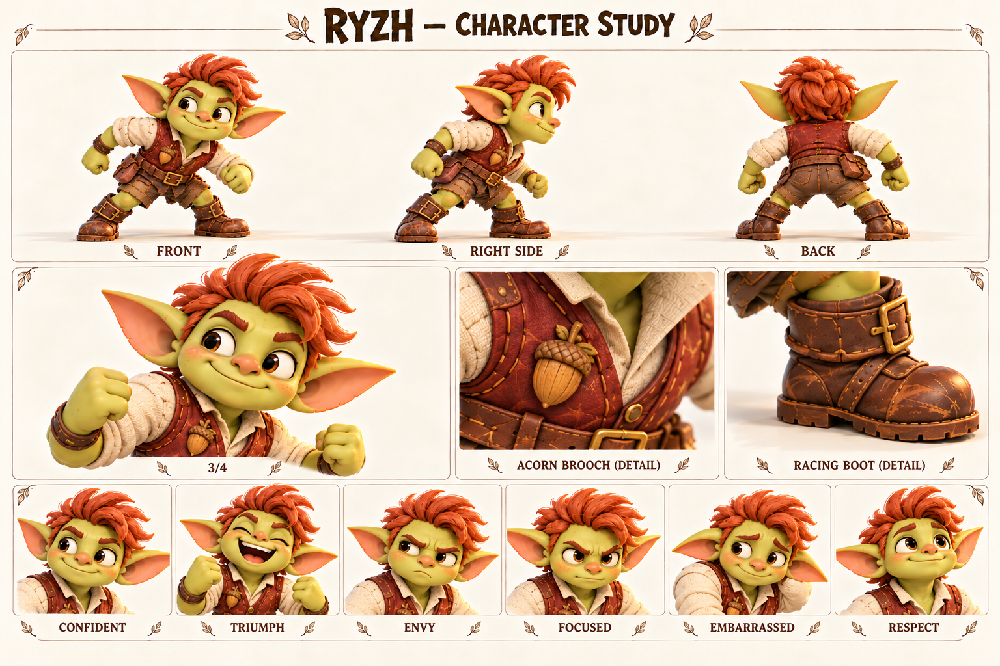

Чего хочет
Быть признанным быстрым и умелым гонщиком.
Хочет, чтобы его замечали первым, и учится оставаться заметным после поражения.
Взрослый гоблин-гонщик, дружеский соперник и возможный будущий союзник.

Огненно-рыжий зачёсанный гребень; кирпичный жилет; застёжка-жёлудь.
Палитра: Огненная медь / кирпичный / крем.
Рыж рано понял, что быстро принесённая посылка вызывает улыбку, а выигранный забег собирает вокруг слушателей. Ему нравилось тренироваться: искать удобную постановку ноги, запоминать повороты, повторять неудачный участок. Застёжку-жёлудь он носит как личный знак, а не как доказательство звания. Его скорость заработана привычкой, а не особым происхождением.
Постепенно внимание после побед стало слишком важным. Если кто-то оказывался впереди, Рыж вспоминал мокрый камень, неудобный старт или «не совсем понятные правила». Он не обязательно обманывает сознательно: так легче не признать, что другой сегодня справился лучше. Тиш раздражает и привлекает его тем, что способен остановиться ради друга, даже когда до финиша совсем близко.
Будущая встреча должна дать Рыжу честный выбор: удержать преимущество или помочь тому, кто отстал. Его изменение убедительно, если он не перестанет любить гонки. Он может снова захотеть победить, но уже сумеет назвать чужой хороший ход и предложить реванш без оправданий. Дружба не отнимает его азарт — делает соревнование интересным для обоих.
Быть признанным быстрым и умелым гонщиком.
Отделять собственную ценность от первого места.
Что после проигрыша никто не захочет слушать или звать его.
Ищет внешнее оправдание поражению и иногда превращает дружескую игру в проверку достоинства.
Тренированность, наблюдение за движением, настойчивость и способность увлечь соревнованием.
Хорошо переносит усталость на тренировке, но плохо — одно спокойное поздравление победителю.
Темп и ритм. Быстро, пружинисто, с короткими вызовами и вопросами.
Слова и построение фразы. Спорим, успеешь, финиш, ещё раз, хороший ход. Спортивные наблюдения.
Юмор. Дружеское подначивание; после развития — самоирония о собственных отговорках.
Под давлением. Становится колким и торопливо объясняет, почему результат не считается.
Как проявляет заботу. Предлагает потренироваться вместе и делится конкретным приёмом.
Чего избегать. Не делать злодеем, хулиганом, мошенником по умолчанию или унижать проигравшего.
| Ситуация | Реплика или действие |
|---|---|
| Вызов | До поворота? Только без «я ещё не начал». |
| Победа | Хорошо шли! Ещё раз? |
| Старая отговорка | Я бы успел, если бы… Ладно. Ты был быстрее. |
| Уважение | На том камне ты здорово развернулся. Покажешь? |
| Помощь | Финиш подождёт. Давай руку. |
| Реванш | Поздравляю. А теперь у меня есть причина потренироваться. |
| Подпись на листе | Состояние | Актёрская задача |
|---|---|---|
| CONFIDENT | Уверенность | Приподнятый подбородок и открытая ухмылка. |
| TRIUMPH | Триумф | Радость всем лицом, без злорадства. |
| ENVY | Зависть | Взгляд в сторону победителя, улыбка пропадает. |
| FOCUSED | Концентрация | Подбородок ниже, глаза следят за опорой. |
| EMBARRASSED | Стыд | Взгляд вниз, рука к застёжке. |
| RESPECT | Уважение | Прямая искренняя улыбка, плечи свободны. |
Движение: Перед стартом пружинит коленями, быстро проверяет дорожку глазами. После честного проигрыша остаётся на месте, не отворачивается сразу.
| План | Что показывает |
|---|---|
| Общий план спереди | Силуэт, лицо, одежда, положение ступней; без потери главных признаков. |
| Боковой ракурс | Глубина фигуры, профиль лица, предметы на ремнях и посадка одежды. |
| Вид со спины | Причёска, крепления, рюкзак либо панцирь; признаки не зеркалятся. |
| Средний план в три четверти | Лицо вместе с характерным жестом и позой корпуса. |
| Крупные детали | Материал и узнаваемые предметы; особенности лица, уха, руки или панциря. |
| Шесть эмоциональных портретов | Взгляд, брови, рот и положение головы; у существ также усики, крылья и поза. |
Гонка, где остановка ради другого оказывается важнее рекорда, а реванш остаётся дружеским обещанием.